Handbuch für alle, die Texte, Termine
und Bilder der Chorseite betreuen.
PMS-Verwaltung · Stand dieser Ausgabe siehe letzte Seite
Es setzt voraus, dass Sie einen Rechner bedienen können, und erklärt nur, was an diesem System besonders ist. Die Bildschirmfotos stammen aus dem laufenden Betrieb; weicht eine Abbildung bei Ihnen ab, ist vermutlich das Handbuch veraltet.
Alles, was auf der Website steht, hängt an vier Begriffen. Wer sie kennt, findet sich in der Verwaltung ohne weitere Erklärung zurecht.
| Begriff | Bedeutung |
|---|---|
| Inhalt | Eine einzelne Seite mit Titel, Kurzbeschreibung und Text. Das Objekt, mit dem Sie zu 95 Prozent arbeiten. |
| Unterkategorie | Enthält mehrere Inhalte, etwa „Neuigkeiten“ oder „Termine“. |
| Kategorie | Enthält mehrere Unterkategorien, etwa „Aktuelles“ oder „Verein“. |
| Menü | Die Navigation der Website. Ein Menüpunkt zeigt auf eine Kategorie, eine Unterkategorie, einen Inhalt oder eine feste Adresse. Die Zuordnung pflegt die Betreuung. |
Die Zuordnung ist streng hierarchisch: Jeder Inhalt liegt in genau einer Unterkategorie, jede Unterkategorie in genau einer Kategorie. Ein Inhalt an zwei Stellen gleichzeitig ist nicht vorgesehen – dafür setzt man einen Verweis.
Jeder Inhalt hat einen Typ. Er entscheidet, wie die Seite auf der Website behandelt wird, und lässt sich jederzeit ändern.
| Typ | Verhalten |
|---|---|
| Standard | Gewöhnliche Seite. Erscheint in der Übersicht ihrer Unterkategorie. |
| News | Wie Standard, wird zusätzlich in Nachrichtenlisten ausgegeben – etwa auf der Startseite. |
| Download | Seite mit einer Datei. Der Verweis darauf steht im Feld Download-Link, das nur bei diesem Typ erscheint. |
| Spezialseite | Systemseite mit fester Rolle: Startseite, Gästebuch, Fehlerseite, Sperrseite. Von jeder Rolle gibt es genau eine. Siehe Kapitel 10. |
Es gibt keinen getrennten Veröffentlichungsschritt. Sobald Sie speichern, steht die Änderung auf der Website – es sei denn, der Inhalt ist als Entwurf gekennzeichnet (Kapitel 6).
Die Verwaltung liegt unter der Adresse der Website plus /admin, also zum Beispiel www.maennerchor.net/admin. Die alte Adresse admin.php leitet dorthin weiter.
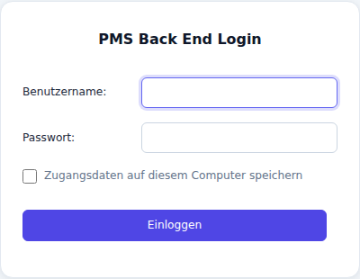
Es gibt keine Funktion zum Zurücksetzen des Passworts. Wer sich ausgesperrt hat, wendet sich an die Betreuung.
Nach längerer Untätigkeit endet die Sitzung. Sie landen wieder auf der Anmeldemaske; ein abgeschicktes Formular geht dabei verloren. Bei längeren Texten deshalb zwischendurch Übernehmen drücken – das speichert und lässt Sie im Formular.
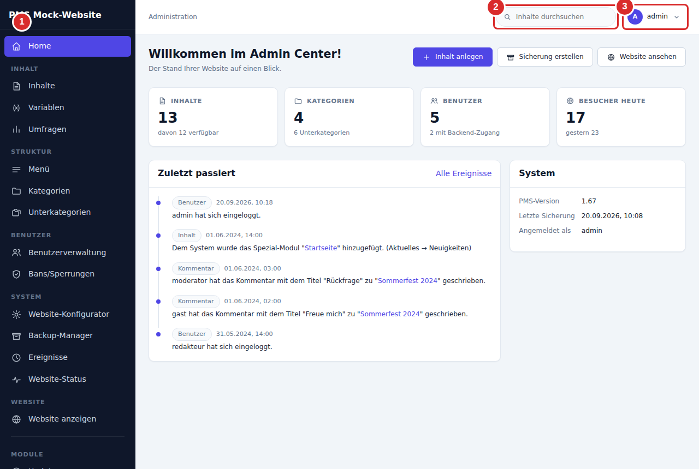
Die Kacheln und die Liste „Zuletzt passiert“ darunter sind reine Anzeige. Die Schaltflächen oben rechts – Inhalt anlegen, Sicherung erstellen, Website ansehen – sind Abkürzungen zu Stellen, die Sie sonst über die Seitenleiste erreichen.
Hinter vielen Feldbezeichnungen steht ein Fragezeichen. Es klappt eine Erklärung zu genau diesem Feld auf – die schnellste Auskunft, wenn unklar ist, was ein Schalter bewirkt.
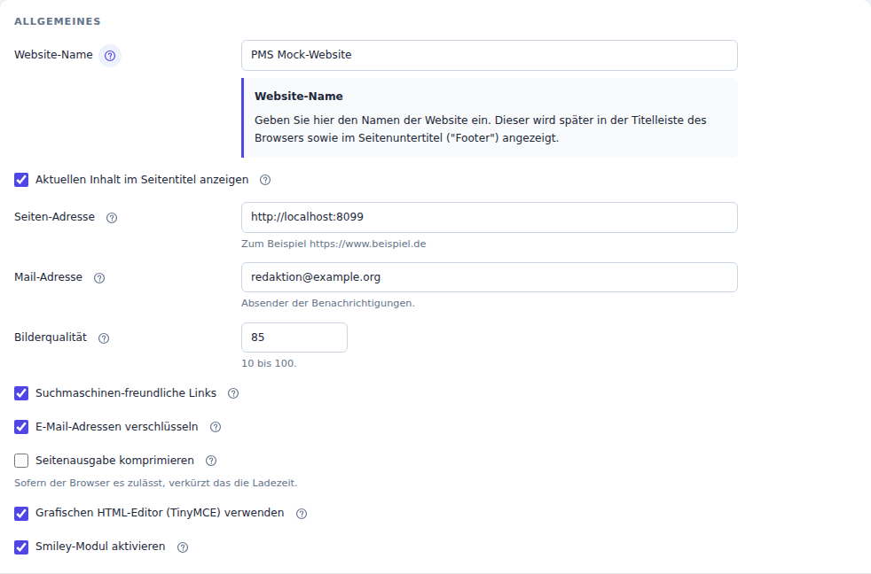
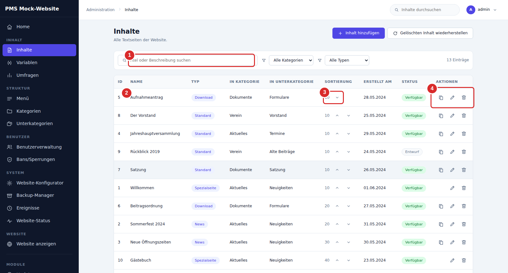
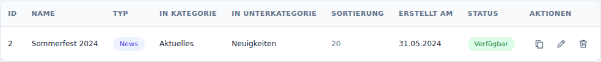
Er ist in vier Abschnitte geteilt: Einordnung, Inhalt, Bild und Veröffentlichung.
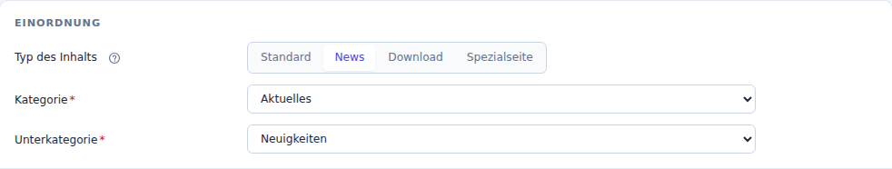
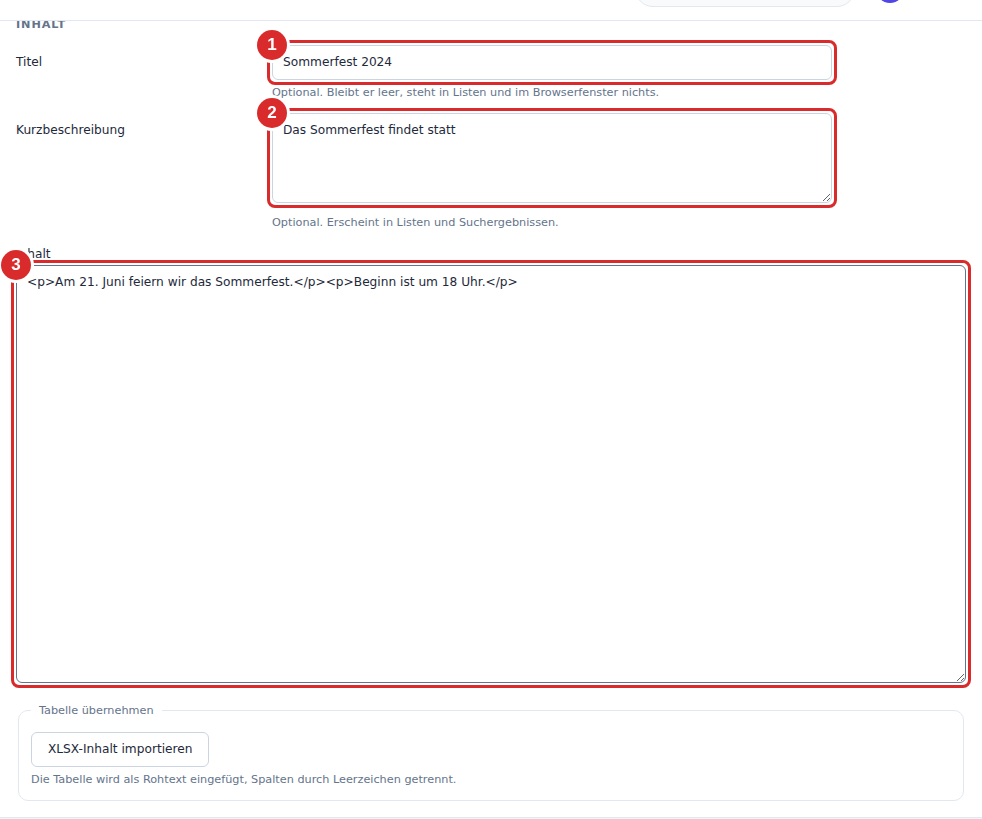
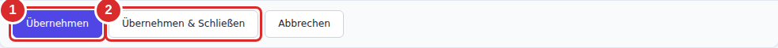
Abbrechen verwirft alles seit dem letzten Speichern.
Inhalt hinzufügen öffnet dasselbe Formular leer. Pflicht sind Kategorie und Unterkategorie (roter Stern); alles andere lässt sich nachtragen.
Bei wiederkehrenden Seiten – Probenplan, Jahresrückblick, Protokoll – ist die Schaltfläche Kopieren in der Liste schneller: Sie erzeugt ein Duplikat mit identischer Einordnung und identischen Schaltern, das Sie nur noch inhaltlich anpassen.
Das Textfeld gibt es in zwei Betriebsarten, umschaltbar über Grafischen Editor ein-/ausschalten oben rechts. Die Einstellung bleibt für Ihre Sitzung erhalten.
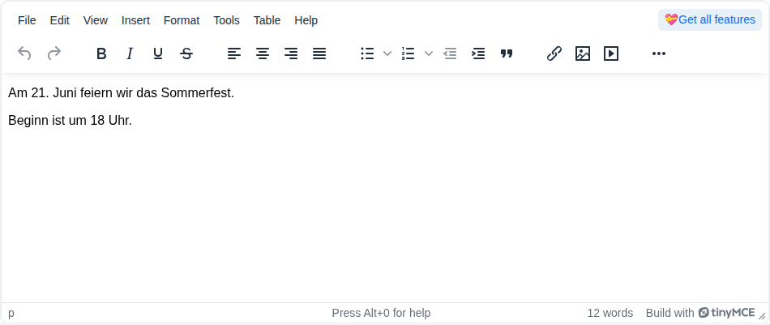
| Fall | Vorgehen |
|---|---|
| Absatz oder Zeilenumbruch | Enter erzeugt einen Absatz (<p>), Umschalt + Enter einen Zeilenumbruch (<br>). Für Adressen und Terminlisten den Umbruch nehmen. |
| Text aus Word oder von einer Website | Mit Strg + Umschalt + V als reinen Text einfügen und hier neu formatieren. Sonst schleppen Sie Schriftgrößen und Farben ein, die das Seitenlayout aushebeln. |
| Überschriften im Text | Über Format → Formats → Headings. Nicht durch Fettschrift ersetzen – das Layout der Website richtet sich nach den Überschriftsebenen. |
| Tabellen | Über das Menü Table. Tabellen ohne Rahmenangabe werden auf schmalen Bildschirmen untereinander gestapelt, damit sie nicht aus der Seite laufen. |
| Verweis auf eine eigene Seite | Adresse aus der Adresszeile kopieren. Die sprechende Form (/content/…) und die alte Form (index.php?item=…) funktionieren beide. |
Im Abschnitt Inhalt steht darunter die Schaltfläche XLSX-Inhalt importieren. Sie übernimmt eine Tabellendatei als Rohtext, Spalten durch Leerzeichen getrennt – gedacht für Terminlisten, die ohnehin zeilenweise ausgewertet werden.
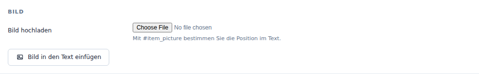
Jeder Inhalt trägt ein Bild. Datei auswählen, Übernehmen – erst damit wird hochgeladen. Danach erscheinen Vorschau und zwei Felder für Breite und Höhe; mit gesetztem Häkchen Seitenverhältnis halten genügt die Breite.
Ohne weitere Angabe steht das Bild über dem Text. Soll es an einer bestimmten Stelle stehen, setzen Sie dort die Marke
#item_picture
Die Schaltfläche Bild in den Text einfügen setzt diese Marke an die aktuelle Position.
Die Verwaltung skaliert die Anzeige, nicht die Datei. Ein 6-MB-Foto bleibt ein 6-MB-Foto und muss von jedem Besucher geladen werden. Verkleinern Sie vor dem Hochladen auf etwa 1600 Pixel Breite; das liegt je nach Motiv bei 200 bis 500 KB.
Die Obergrenze des Servers liegt bei 20 MB je Datei.
Dafür ist das Bildfeld nicht gedacht. Laden Sie die Bilder über den Dateimanager hoch und binden Sie sie im Editor über Insert → Image ein. Wenn Ihnen der Zugang dazu fehlt, ist das ein Fall für die Betreuung.
Nur eigene Aufnahmen oder Bilder mit ausdrücklicher Erlaubnis. Bei erkennbaren Personen gilt das Recht am eigenen Bild – bei Minderjährigen entscheiden die Erziehungsberechtigten. Eine Fundstelle im Internet ist keine Lizenz.
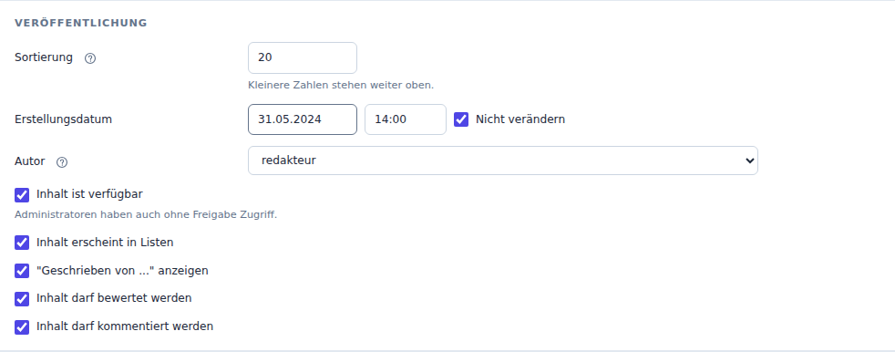
| Schalter | Wirkung |
|---|---|
| Inhalt ist verfügbar | Aus: Besucher bekommen die Seite nicht zu sehen, angemeldete Administratoren schon. In der Liste steht dann Entwurf. |
| Inhalt erscheint in Listen | Aus: Die Seite fehlt in Übersichten und Menüs, bleibt aber über ihre Adresse erreichbar. Nützlich für Seiten, auf die nur von anderer Stelle verwiesen wird. |
| „Geschrieben von …“ anzeigen | Blendet Verfasser und Datum über dem Text ein. |
| Bewertung / Kommentare | Schalten Sternebewertung und Kommentarformular je Seite frei. |
Eine Zahl je Inhalt; kleinere Zahlen stehen weiter oben. Sie gilt innerhalb der Unterkategorie. Bei gleicher Zahl entscheidet der Titel.
Vergeben Sie Zehnerschritte. Dann lässt sich später etwas dazwischen einsortieren, ohne die ganze Reihe neu zu nummerieren. Für einzelne Verschiebungen sind die Pfeile in der Liste bequemer.
Das Datum steht auf der Seite, sofern „Geschrieben von …“ eingeschaltet ist, und bestimmt die Reihenfolge in Nachrichtenlisten. Solange das Häkchen Nicht verändern gesetzt ist, bleibt es beim Speichern unberührt – erwünscht bei einer Korrektur, unerwünscht, wenn Sie eine alte Seite inhaltlich neu aufsetzen.
Unabhängig davon merkt sich das System, wann zuletzt geändert wurde, und gibt das als „zuletzt aktualisiert“ aus.
Löschen geschieht über den Mülleimer in der Liste, nach Rückfrage. Der Datensatz ist damit fort – es gibt keinen Papierkorb.
Was es stattdessen gibt, sind die Sicherungen: Der Backup-Manager legt vollständige Kopien der Datenbank an, von Hand oder nach Zeitplan. Aus ihnen speist sich beides – die Wiederherstellung gelöschter Inhalte und der Rückgriff auf eine frühere Fassung.
In der Liste oben rechts: Gelöschten Inhalt wiederherstellen. Sie wählen erst den Datensatz, dann den Zeitpunkt. Angeboten wird, was in einer Sicherung steht, aber nicht mehr in der Datenbank – das setzt eine Sicherung aus der Zeit vor dem Löschen voraus.
Im Bearbeitungsbildschirm oben rechts: Frühere Fassungen. Die Liste zeigt jede Sicherung, in der dieser Inhalt vorkommt, die neueste zuerst.
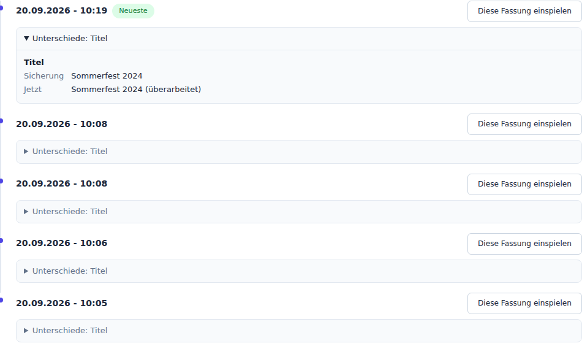
Nicht nur den Text – auch Einordnung, Sortierung und Schalter. Alles seit der Sicherung ist danach fort, ohne weitere Rückfrage.
Wollen Sie nur einen Absatz zurück, kopieren Sie ihn aus dem Vergleich heraus und setzen ihn im Bearbeitungsbildschirm ein. Vor einem tatsächlichen Einspielen lohnt es sich, vorher eine Sicherung anzulegen – dann ist auch der Weg zurück offen.
Für Korrekturen am Text ist der Umweg über die Verwaltung nicht nötig. Melden Sie sich im Anmeldefeld der Website an; neben der Überschrift jeder Seite erscheint dann [Bearbeiten].
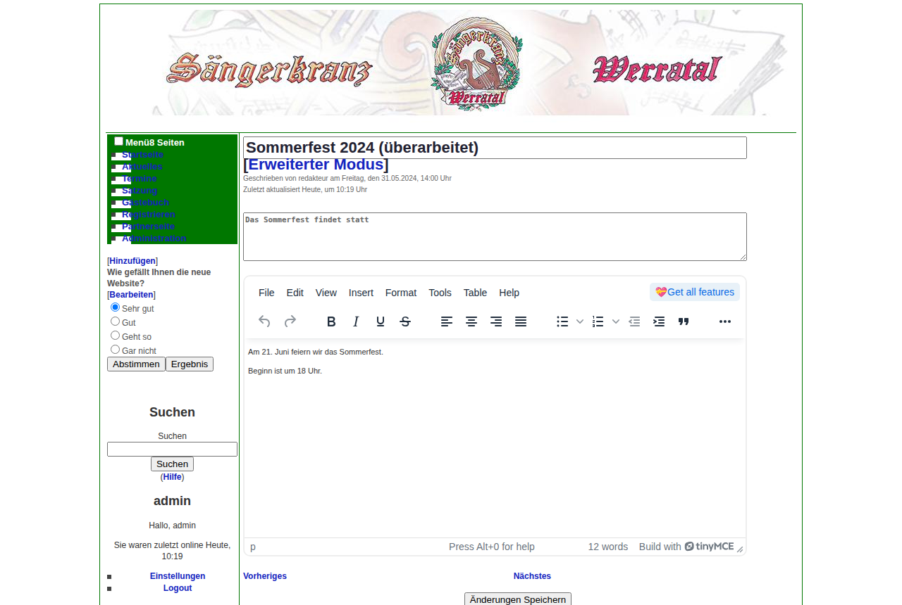
Gespeichert wird mit Änderungen Speichern am Ende der Seite. Für alles andere – Bild, Einordnung, Schalter – führt [Erweiterter Modus] in den vollen Bearbeitungsbildschirm.
Der Text erscheint hier im Quelltext, nicht im grafischen Editor. Sie sehen also die HTML-Marken – und die [php]-Blöcke aus dem nächsten Kapitel.
Ein Teil der Seiten ist nicht einfach Text, sondern wird beim Aufruf zusammengesetzt. Das betrifft Sie, sobald Sie eine solche Seite öffnen – und es ist die häufigste Ursache für eine Seite, die plötzlich weiß bleibt.
Steht im Text ein Block zwischen [php] und [/php], wird sein Inhalt beim Aufruf als Programm ausgeführt. So entstehen etwa der Probenplan aus einer Terminliste oder die Verweise „Neuer Probenplan“, die nur Angemeldete sehen.
Unter Variablen liegen Textbausteine, die über ein Kürzel an beliebig vielen Stellen eingesetzt werden. Eine Änderung dort wirkt sich sofort überall aus, wo das Kürzel vorkommt – entsprechend zurückhaltend sollte man damit umgehen.
Marken mit Doppelkreuz wie #item_picture werden beim Aufbau der Seite ersetzt. Weitere gibt es für das Template der Website; im Inhaltstext begegnet Ihnen regelmäßig nur dieser eine.
Die folgenden Bereiche gehören nicht zur Inhaltspflege. Sie sind nicht gesperrt – aber eine Änderung dort wirkt sich auf die ganze Website aus und lässt sich nicht so einfach zurücknehmen wie ein Text.
| Bereich | Warum |
|---|---|
| Website-Konfigurator | Grundeinstellungen: Name, Template, Sprache, Startseite, Zeitzonen, Mailversand. Eine falsche Angabe kann die Website unerreichbar machen. |
| Menü, Kategorien, Unterkategorien | Struktur. Das Löschen einer Kategorie nimmt allen darin liegenden Inhalten ihren Platz. |
| Variablen | Wirken an vielen Stellen zugleich (Kapitel 9). |
| Benutzerverwaltung, Bans | Zugänge und Sperren. |
| Spezialseiten | Startseite, Gästebuch, Fehler- und Sperrseite. Jede Rolle existiert genau einmal; wird sie einem anderen Inhalt zugewiesen, verliert die bisherige Seite ihre Funktion. |
| Symptom | Ursache und Abhilfe |
|---|---|
| Seite bleibt weiß | Meist ein Fehler in einem [php]-Block (Kapitel 9). Die zuletzt bearbeitete Seite im Quelltextmodus öffnen und den Block prüfen, oder über Frühere Fassungen zurückgehen. Tritt es unabhängig von einer Bearbeitung auf, melden Sie Adresse und Uhrzeit – das Serverprotokoll nennt dann die Zeile. |
| „Aus Sicherheitsgründen wurde die Sitzung beendet“ | Zeitüberschreitung. Neu anmelden; das abgeschickte Formular ist verloren. |
| Änderung erscheint nicht auf der Website | Erst prüfen, ob Inhalt ist verfügbar gesetzt ist. Sonst ist es der Browser-Cache: Strg + F5. |
| Layout zerschossen nach dem Einfügen | Formatierung aus Word oder von einer Website. Absatz löschen, als reinen Text neu einfügen. |
| Feld rot umrandet | Prüfung fehlgeschlagen; die Meldung darunter nennt den Grund. Die übrigen Eingaben bleiben erhalten. |
| Bild wird nicht angezeigt | Nach der Dateiauswahl fehlt das Übernehmen – erst damit wird hochgeladen. Oder die Datei überschreitet 20 MB. |
| Unklar, was geändert wurde | Frühere Fassungen zeigt den Vergleich zum letzten gesicherten Stand. Ereignisse in der Seitenleiste zeigt, wer wann was angefasst hat. |
Hilfreich sind: die Adresse aus der Adresszeile, der Zeitpunkt, die letzte Aktion davor und der Wortlaut einer etwaigen Meldung. Bei einer weißen Seite zusätzlich, ob sie nach einer Bearbeitung auftrat – damit lässt sich der Eintrag im Serverprotokoll zuordnen.
| Aufgabe | Weg |
|---|---|
| Verwaltung öffnen | Adresse der Website + /admin |
| Text ändern | Inhalte → Name anklicken → Übernehmen & Schließen |
| Seite anlegen | Inhalte → Inhalt hinzufügen |
| Seite duplizieren | Inhalte → Kopieren-Schaltfläche in der Zeile |
| Seite zurückziehen | Häkchen Inhalt ist verfügbar entfernen |
| Reihenfolge | Pfeile in der Liste, oder Feld Sortierung |
| Bild einfügen | Datei wählen → Übernehmen → #item_picture im Text |
| Fassung vergleichen | Im Editor: Frühere Fassungen |
| Gelöschtes zurückholen | Inhalte → Gelöschten Inhalt wiederherstellen |
| Sicherung anlegen | Startseite → Sicherung erstellen |
| Schnellkorrektur | Auf der Website anmelden → [Bearbeiten] |
Betreuung: ____________________________________________
Erreichbar unter: ______________________________________
Die Abbildungen stammen aus der laufenden Verwaltung und werden zusammen mit dem Text erzeugt. Beschrieben ist der Stand vom __________.
Quelle und Erzeugung: docs/anleitung/ im Projektverzeichnis.